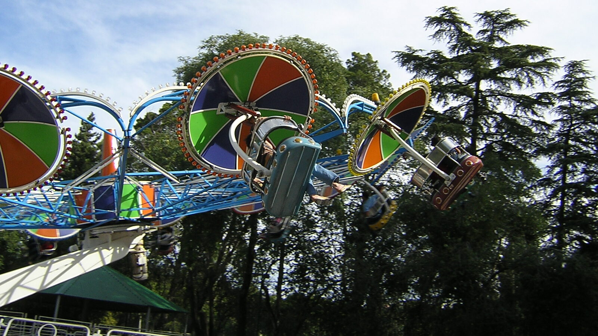
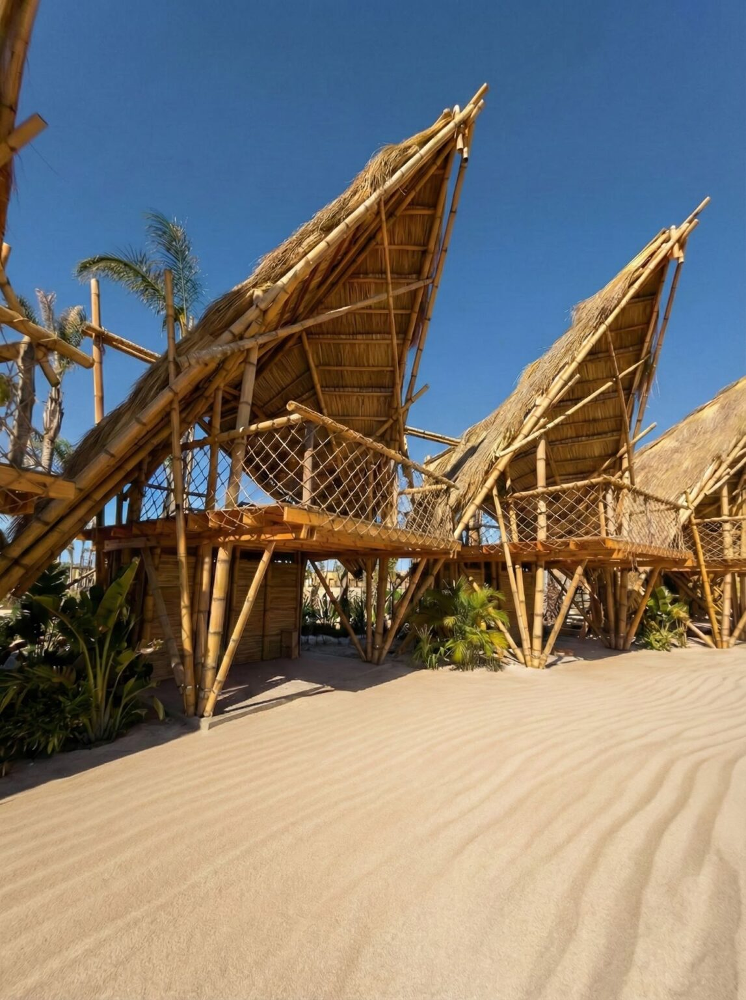
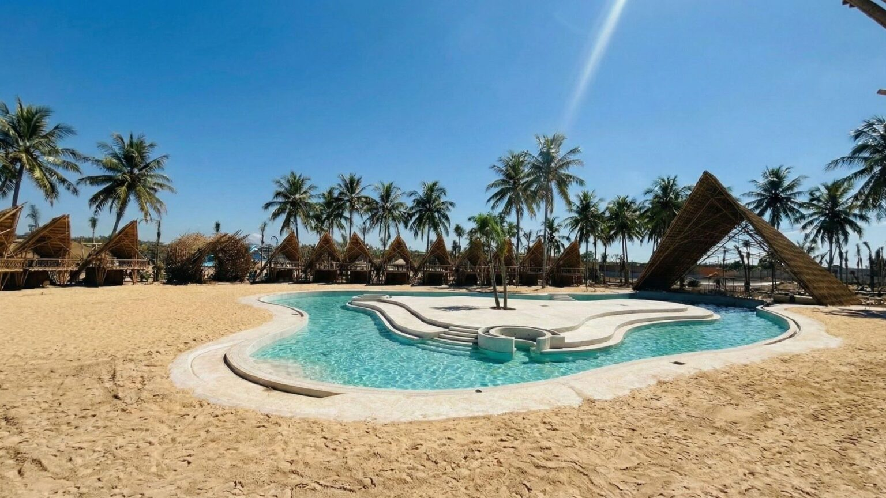

Super Park se fundó el 24 de abril de 1968, con el propósito de brindar a los cordobeses un centro de diversión estable, ya que en esa época todas las posibilidades de diversión eran itinerantes. En ese tiempo, las salidas sólo se realizaban los domingos por la tarde y era característico ver a sus visitantes vestidos de saco y corbata.

Información General
Apertura:24 de abril de 1968
Horario: Jueves y Viernes de 16 a 20 hs. Sábados, Domingos y Feriados de 13 a 21 hs
Ubicación: Amado J. Roldán S/N Parque Sarmiento Córdoba, Argentina
Entradas: Cada crédito tiene un valor de $2.000.
Beneficios:Compra de 30 créditos: $36.000. Compra de 60 créditos: $52.000.
🌊 Infinito Water Park

El parque forma parte de Infinito Open, un ambicioso desarrollo integral que se ejecuta por etapas y que incluye, además, un Open Mall y un Arena para espectáculos y eventos.

Información General
Apertura: 10 de enero de 2026
Temporada: hasta mediados de abril
Horario: diariamente de 9:30 a 19:00
Ubicación: Avenida Circunvalación – Bajada 7 Bis, entre Costanera y Autopista Córdoba–Rosario
Entradas: pases diarios
PaseShow: en este enlace o en boletería
Beneficios: hasta 9 cuotas sin interés y 20% Club La Voz
CUD: 50% de descuento para titular y acompañante
Hospedaje: no cuenta con alojamiento propio
Ingreso de alimentos: permitido mate y agua (hasta 2 litros)